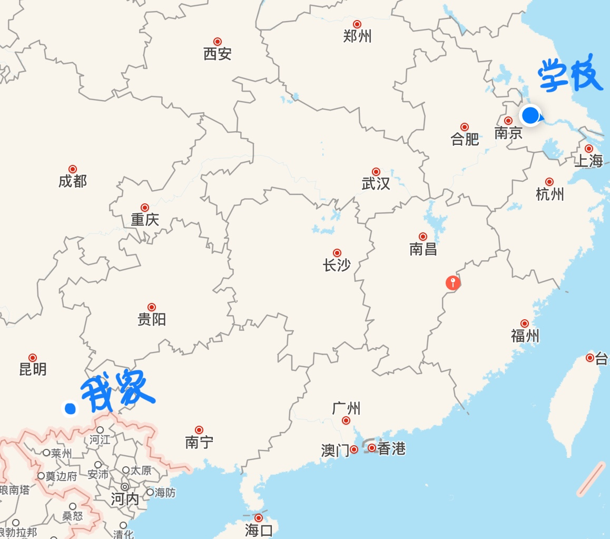

我叫李梦。
来自云南省文山市，一个靠近越南的边疆城市。
出生于1998年正月初九，今年20岁。
现居江苏省镇江市，大四，正在找工作。
前端开发
江苏大学 软件工程 本科
○ 2015/09 —— 2019/07
在校期间学习了JAVA/C++/Android/C#/XML等语言课程。
以及数据结构/算法/数据库/编译原理/操作系统/设计模式/计算机网络/软件工程/需求工程等多门专业相关课程。
曾担任组织宣传委员，负责和团支书一起组织开展班级内的各项活动，撰写活动报告等。
熟悉HTML5/CSS/JavaScript等前端技术，能熟练使用PhotoShop。
熟悉JAVA/Android语言，了解Python/C#。
性格较外向，适应能力强，对喜爱的事物充满热情，愿意付出，热爱合作沟通。
最近在看《JavaScript高级程序设计》，希望JS的基础能够牢固一些。
各种类型的小说都看的很多，最喜欢脑洞特别大的文，有自己的世界观架构和各种设定。所以很喜欢科幻、未来高科技或者世界末日类型的文。
比如毕淑敏的《花冠病毒》，Priest的《山河表里》，江南的《龙族》，南派三叔的《盗墓笔记》…
业余水平，但也是从小到大的一点点爱好，没有机会专门学绘画，就自己偶尔随便画一画。做UI写前端的时候也经常自己画或者找来素材用PS改一改，有时候也会用来修一修照片图片什么的，我觉得画画和PS都是是一件让人十分开心的事情。
端游玩过LOL，高一突然感兴趣，后来为了学习没有继续玩。到了大学和同学们一起玩了一段时间，排位打过十局定级赛定到了黄金二就不再玩了。
初中到高中玩过一个页游，一个端游，可惜小公司的游戏寿命总是短暂的，一个在初三关服了，另外一个也在高三的时候关了。
王者荣耀只和朋友打到铂金，钟爱虞姬，被朋友说凭借虞姬有冲击王者的实力，可惜没有时间去验证这句话了。
吃鸡正火的时候宿舍四个人一起玩得也特别开心，虽然经常落地成盒，但是后来逐渐的也能够一起吃到鸡了。
阴阳师虽然已经走了很多人了，但是两年了，虽然越来越忙，没空，但还是坚持每天上线看一看。
橙光游戏玩过几款，也幻想过自己去做一个游戏，但是做游戏的成本太高，而且没有合适的脑洞也就放弃了。
曾想过投身游戏行业，但是在自己做了一个简单的小游戏合集后，意识到了做游戏和玩游戏是两码事，工作和爱好重合并不一定是一件开心的事情…
最近看了《一出好戏》，说实话我不喜欢这部电影的题材，一群人被迫留在了荒岛上，这种探讨人性和社会关系的电影太过于压抑，而且结局过于理想化了，所以不是很喜欢。《西虹市首富》其实也是一部考验主角人性的电影，但是张弛有度，喜和悲穿插得当就让人看得很舒服。
漫威出品的一系列《雷神》《美国队长》《钢铁侠》《蚁人》《奇异博士》《复仇者联盟》N部曲全都看过，很喜欢漫威宇宙里英雄们的故事。他们或许有着各方面的不完美，但是却因为不完美而更加显得真实，有血有肉。
电视剧最喜欢的就是《权力的游戏》《神探夏洛克》，这都是质量非常高的剧，从质感和剧情来说我觉得和电影并没有多少区别。说到这个就想到目前国内的很多注水剧，动不动拖到六七十集，整体质量就很低。回头看曾经的经典《西游记》，只有25集，看完却仿佛觉得走过了八十一难，每一集都很值得评鉴回味。非常希望未来国内也能有很好的电视剧作品…
看的文多了当然也会有很多想法，也会想要自己写点什么，睡前开脑洞写文有助于睡眠。